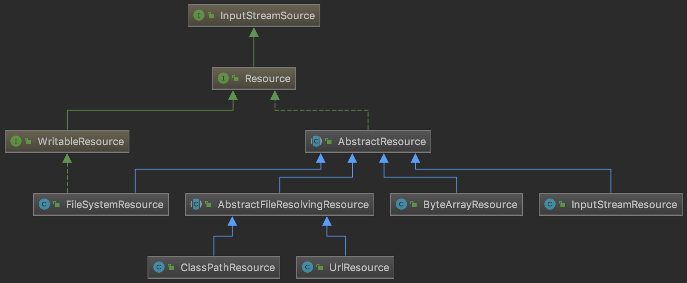
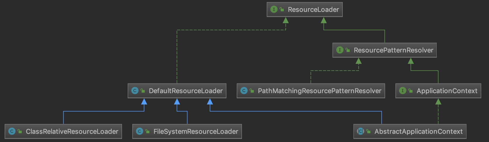
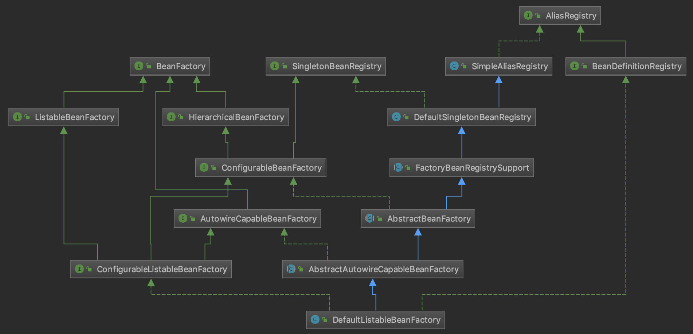
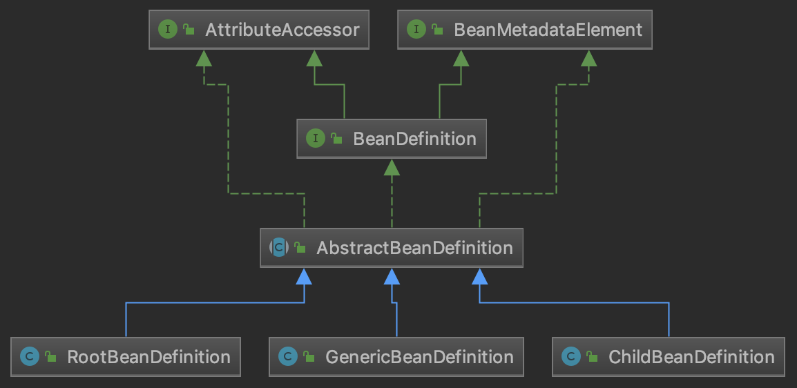
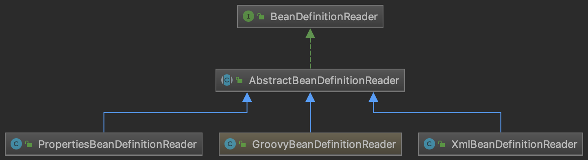

1. Resouce 体系
org.springframework.core.io.Resource是对资源的抽象, 不同实现类代表了对不同资源的访问策略.

2. ResourceLoader 体系
org.springframework.core.io.ResourceLoader统一处理资源加载过程.

3. BeanFactory 体系
org.springframework.beans.factory.BeanFactory是底层的 IOC 容器, 负责管理BeanDefinition以及 Bean 实例, 默认使用的最终实现类是org.springframework.beans.factory.support.DefaultListableBeanFactory.

4. BeanDefinition 体系
org.springframework.beans.factory.config.BeanDefinition是对 Bean 的抽象

5. BeanDefinitionReader 体系
org.springframework.beans.factory.xml.XmlBeanDefinitionReader负责读取 spring 配置文件内容, 从中解析出 BeanDefinition 对象.

6. ApplicationContext 体系
org.springframework.context.ApplicationContext叫做应用上下文, 是应用层的容器, 内部其实依赖了底层容器BeanFactory去管理 Bean. 相比后者, ApplicationContext做了如下的增强:
- 继承
org.springframework.context.MessageSource接口, 提供国际化能力 - 继承
org.springframework.context.ApplicationEventPublisher接口, 提供了应用事件机制 - 扩展
ResourceLoader, 可以加载多种Resource, 灵活访问不同的资源
title: spring ioc 体系结构
tags:
- spring ioc
- java
categories: - spring
- source code
- java
date: 2019-09-02 10:46:55
1. Resouce 体系
org.springframework.core.io.Resource是对资源的抽象, 不同实现类代表了对不同资源的访问策略.
2. ResourceLoader 体系
org.springframework.core.io.ResourceLoader统一处理资源加载过程.
3. BeanFactory 体系
org.springframework.beans.factory.BeanFactory是底层的 IOC 容器, 负责管理BeanDefinition以及 Bean 实例, 默认使用的最终实现类是org.springframework.beans.factory.support.DefaultListableBeanFactory.
4. BeanDefinition 体系
org.springframework.beans.factory.config.BeanDefinition是对 Bean 的抽象
5. BeanDefinitionReader 体系
org.springframework.beans.factory.xml.XmlBeanDefinitionReader负责读取 spring 配置文件内容, 从中解析出 BeanDefinition 对象.
6. ApplicationContext 体系
org.springframework.context.ApplicationContext叫做应用上下文, 是应用层的容器, 内部其实依赖了底层容器BeanFactory去管理 Bean. 相比后者, ApplicationContext做了如下的增强:
- 继承
org.springframework.context.MessageSource接口, 提供国际化能力 - 继承
org.springframework.context.ApplicationEventPublisher接口, 提供了应用事件机制 - 扩展
ResourceLoader, 可以加载多种Resource, 灵活访问不同的资源